陇剑杯-webshell-wp
一.题目介绍
网站被黑客挂马，要求从流量中分析出webshell
1.1 考点
- 流量分析
- wireshark的使用
- 日志审计
1.2 环境文件
下载附件，用wireshark打开
二.解题步骤
问（1）
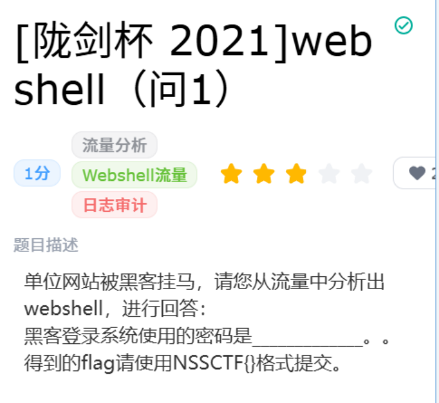
2.1-1 设置过滤条件，定位登录数据包：在过滤栏中输入http.request.method == 'POST'
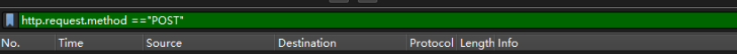
### 2.1-2 在筛选结果中，找到目标登录数据包（访问路径包含login.php）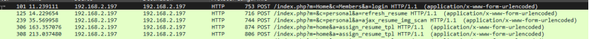
### 2.1-3 右键数据包，点击【追踪流】——【TCP流】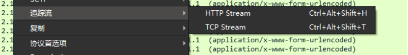
### 2.1-4 在弹出的流窗中找到POST表单内容： username=test&password=Admin123!@#&expire=0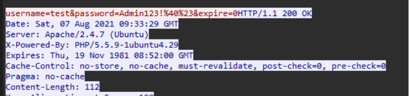
### 2.1-5 URL解码后40=@，23=#，所以密码为Admin123!@#，即flag为Admin123!@#问（2）
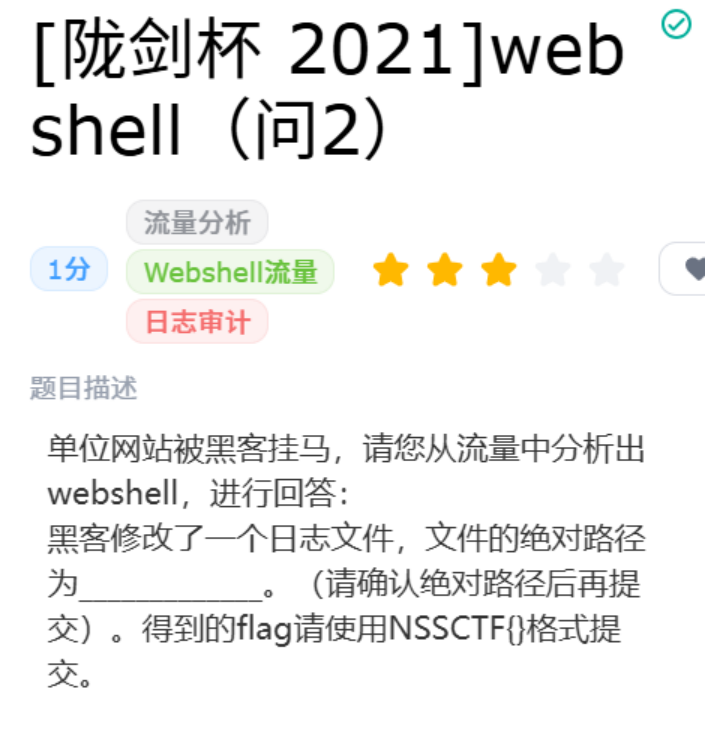
2.2-1 在过滤栏中输入http contains '.log'
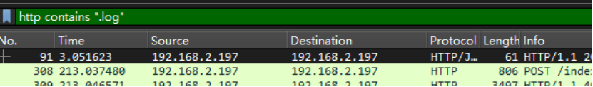
### 2.2-2 逐个右键数据包——【追踪流】——【TCP流】（优先选择长度最大的），在其中一条POST请求可以看到 tpl=data/Runtime/Logs/Home/21_08_07.log 这是相对路径，不是绝对路径！！！
### 2.2-3 找到根目录，组成绝对路径
这是相对路径，不是绝对路径！！！
### 2.2-3 找到根目录，组成绝对路径
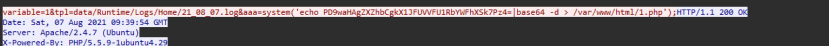
可以知道黑客把PHP木马代码写入服务器/var/www/html/1.php，所以根目录就是/var/www/html ### 2.2-4 把根目录和相对路径拼接起来得到绝对路径： /var/www/html/data/Runtime/Logs/Home/21_08_07.log，即可得到flag问（3）
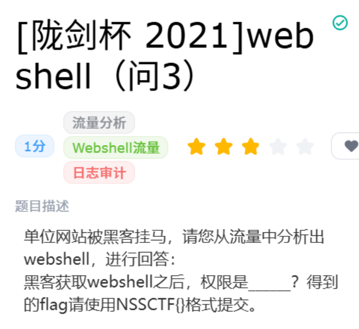
2.3-1 在过滤栏中输入frame contains 'whoami'
2.3-2 逐个右键数据包——【追踪流】——【TCP流】，可以看到流窗下面是一段乱码
2.3-3 服务器返回的内容被gzip压缩了，需要用gzip在线解码，才能看到明文
2.3-4 使用在线解码工具后，得到返回内容里面是www-data，即为flag
问（4）
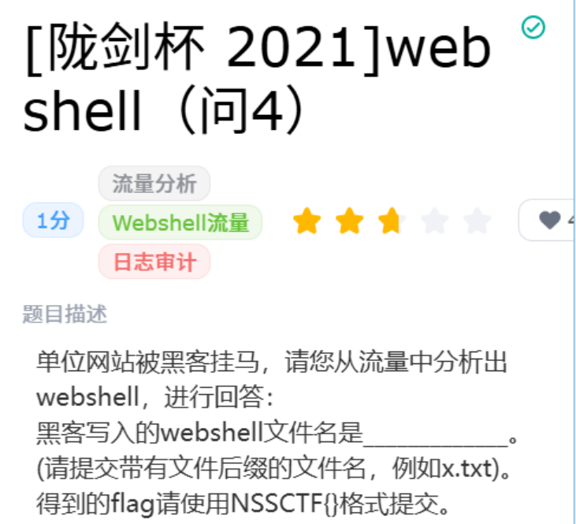
2.4-1 在过滤栏中输入http contains '>'
2.4-2 选中长度最大的数据包——【追踪流】——【TCP流】
2.4-3 找到POST请求数据包，
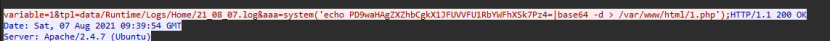
base64 -d：解码base64字符串 1.php：文件名 ### 2.4-4 所以flag为1.php三.相关知识点
3.1 web登录基础原理
- 网站登录大多采用HTTP POST请求，账号密码放在请求体（Body）传输，而非URL参数（GET）。
- HTTP明文传输：未加密的HTTP流量中，表单提交的账号密码可以直接在流量包抓取，这也是抓包能直接看到密码的根本原因。
3.2 URL编码：
- HTTP表单提交时，特殊符号会进行URL编码，需要解码才能得到正确答案
3.3 wireshark流量筛选技巧
- 字符串过滤：frame contains 'password' 直接匹配数据包原始载荷中包含password的包，快速定位登录请求
- HTTP方法过滤：http.request.method == 'POST' 登录、表单提交一般使用POST
- 追踪TCP流：单独数据包只能看到片段，右键数据包——【追踪流】——【TCP流】，才能看到完整HTTP请求原始表单数据
3.4
- 明文HTTP的风险：中间人抓包可以窃取账号密码
- HTTPS可以防止此类明文抓包窃取流量（流量会加密，无法直接看到表单内容）
3.5 绝对路径VS相对路径（区分大小写）
- 绝对路径：从系统根目录/开始写完整条路径（必须以/var/www/html开头）
- 相对路径：只写网站内部的文件夹，不以/开头 这是ThinkPHP框架，框架日志默认存放路径data/Runtime/Logs/
3.6 Linux Apache/Nginx 默认根目录：
- Debian Apache框架：/var/www/html Centos旧版：/var/www/html或者/usr/share/nginx/html
3.7 whoami：执行这条命令，会输出当前正在运行程序的系统用户名。通俗来说就是：我是谁，它返回的结果就是权限，即我是xxx
3.8 whoami vs root:
- root：系统超级管理员，权限无限大
- www-data：网站专用小号，权限受限，仅能够操作网站目录文件
All articles on this blog are licensed under CC BY-NC-SA 4.0 unless otherwise stated.